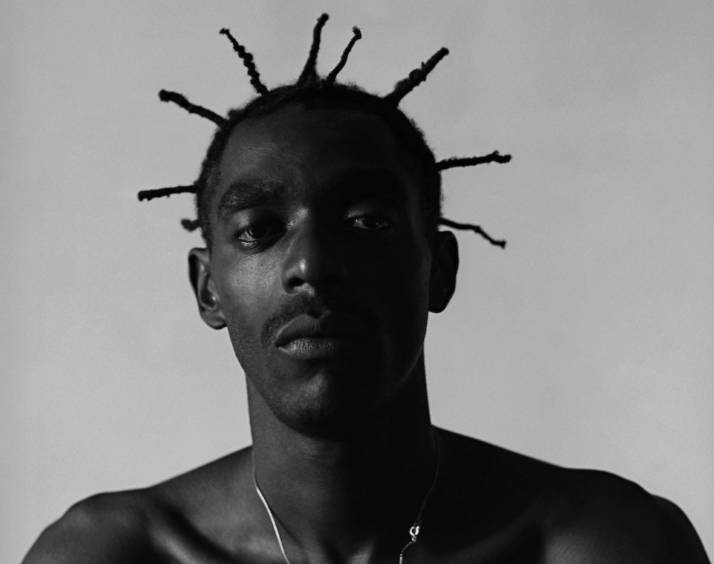
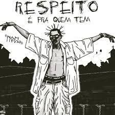

Desde a chegada do Rap no Brasil, escutamos a frase: “O Rap salva vidas” O gênero musical Rap, alcançou a periferia do território brasileiro, e com isso, todas as problemáticas que envolvem o povo que vive lá.
A cultura periférica começa a fazer parte dessa atmosfera. Educando, livrando e transformando jovens! Os mesmos que antes presos nas drogas, no crime, na violência ou até na depressão (carma de um sistema falido e racista), sentem-se acolhidos pelo Rap.
“Cultura periférica é identificação!”
Já faz 14 anos que o Mestre Sabota nos deixou. Um cara com uma mentalidade lúcida e diferenciada, e que teve um papel importantíssimo não só para a cultura hip hop, mas para a representatividade na música. Sabotage foi responsável por dar “voz e holofote” á favela do Canão principalmente na faixa "O bom lugar"
O rapper influenciou muitas gerações. Apresentou um novo jeito de cantar e de ter um propósito com o rap e com a cultura hip hop, de modo geral. Sabotage deixou um legado antes de partir pregando sempre a união de classes, visibilidade às minorias e mostrar que negros e brancos podem e devem estar juntos foram as principais pautas do Mestre. Para muitos, Sabotage foi a ponte que ligou vários mundos e realidades através da música e de seu genial jeito de fazer e viver o rap.
 o hip-hop começou a se unir para o próprio entretenimento das comunidades, o rap se expandia e de piada e zoação se construíam rimas pesadas, métricas afiadas e então temos uma nova “modalidade” no rap.
Além da aproximação com a cultura hip hop, as batalhas de rima também são um convite para quem se interessa por música, literatura, poesia e questões de identidade e representatividade.
Era não só divertido mas também uma forma de ganhar nome, de praticar as habilidades. MC´s de diferentes idades e regiões vinham testar seu improvisado, tomando cuidado pra respeitar a quebrada do outro mas dando seu melhor numa lírica agressiva, controlavam o tempo pra cada participante jogar as punchlines no outro e o placar eram as palmas da plateia.